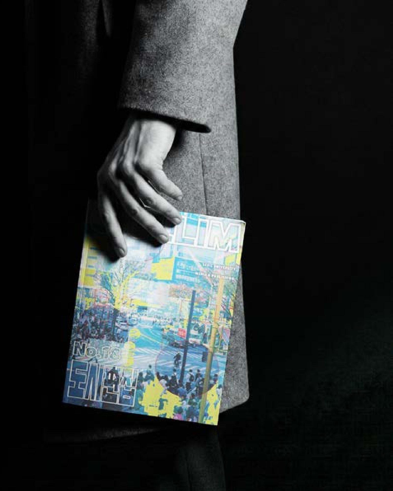
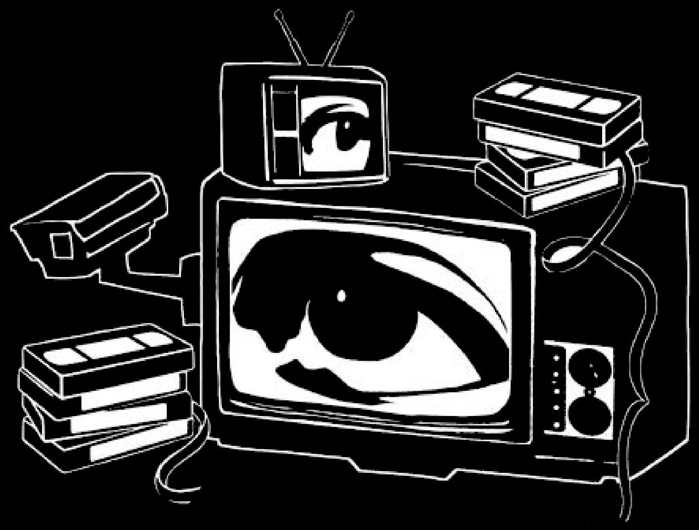
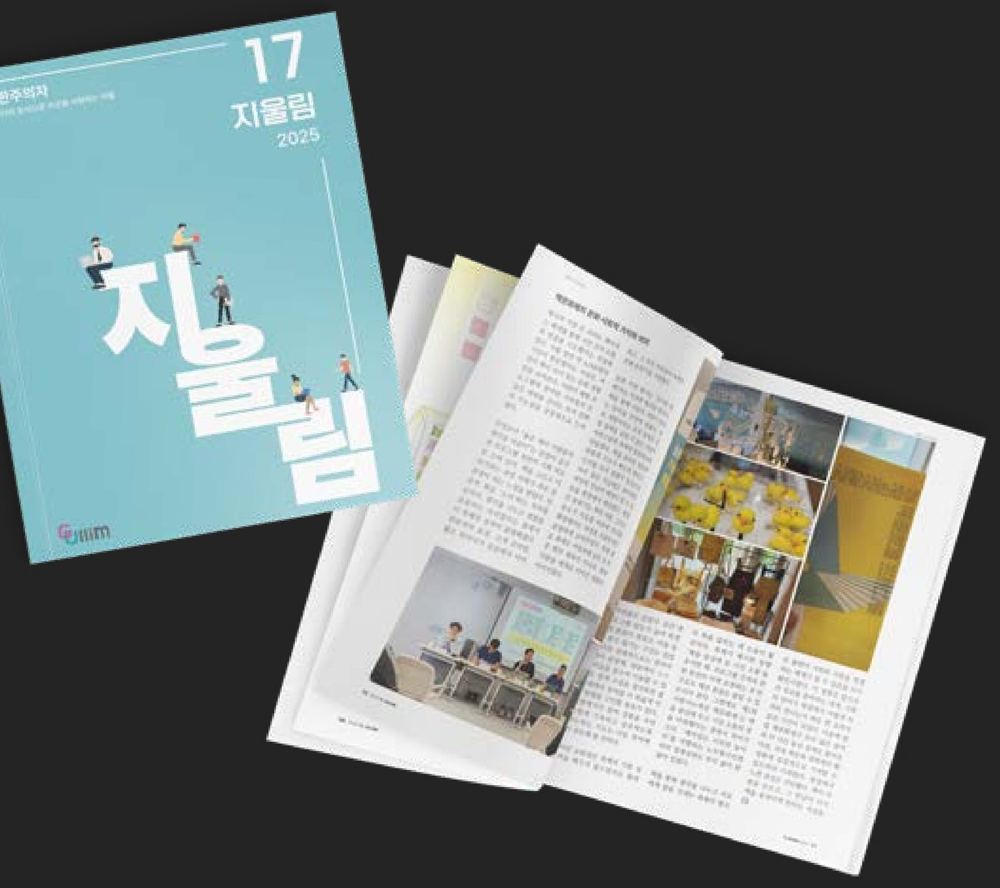
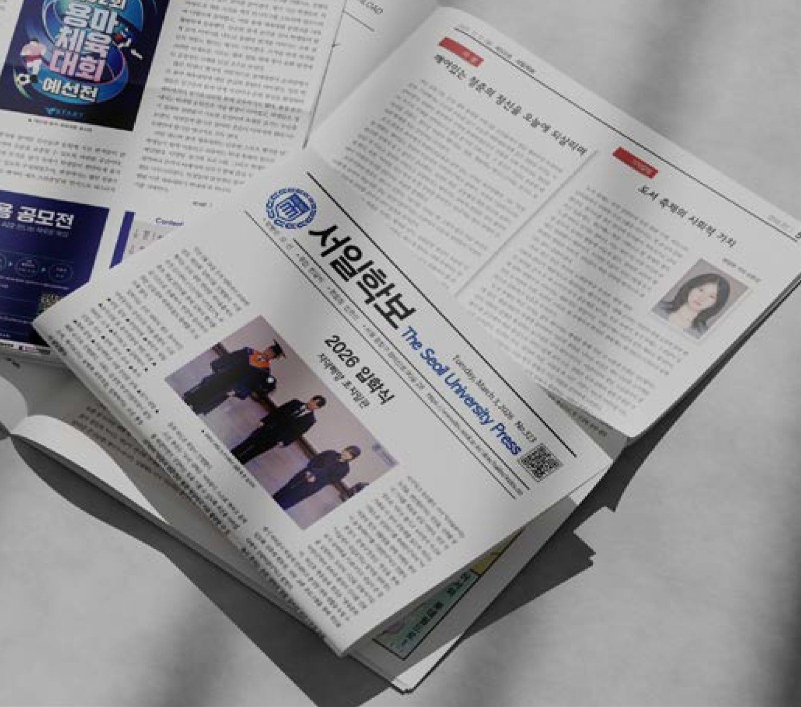
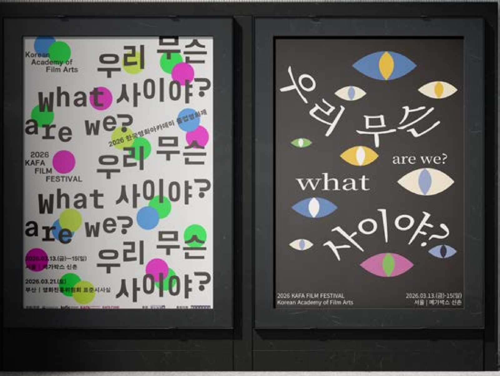

Editor in Contents
하나의 시선에 머무르지 않고 새로운 관점과 가능성을 찾아가는 에디터, 신은선입니다.
잡지·신문·영상·디자인을 넘나들며 이야기를 엮습니다.
Scroll to explorePortfolio 2026
(01) ManifestoPoint of view
If the light is great in front of you, you should turn around and see what it is doing behind you.
눈앞의 빛이 아주 좋다면, 뒤돌아서 뒤쪽에서는 빛이 어떻게 비치고 있는지도 살펴봐야 한다.
— Jay Maisel
익숙한 방향에서 벗어나 시선을 돌리면 미처 발견하지 못했던 가능성이 드러난다. 당연하게 여겼던 것에도 질문을 던지고, 다른 관점에서 대상을 이해하며, 그 안에서 발견한 의미를 나만의 방식으로 표현한다.
— 하나의 시선에 머무르지 않고 새로운 관점과 가능성을 찾아가는 에디터
(03) Signature Projects04 Cases
Signature
Work



(04) How I WorkApproach
기획하고, 현장에 가고, 다듬고, 끝까지 책임지고 발행합니다.
01
Plan
기획
편집회의를 주관하며 지면별 기사 기획과 구성을 논의하고, 한 호를 관통하는 주제를 정합니다.
02
Report
취재
책문화제, 독서 캠페인 선포식, 북토크 현장을 직접 찾아가 관찰하고 사진·영상·글로 기록합니다.
03
Edit
편집
폰트와 자간, 행간, 이미지 간격을 조정해 가독성을 높이고, 일관된 기준으로 지면의 통일감을 만듭니다.
04
Publish
교정 · 발행
교정·교열과 조판본 검수를 반복하고, 피드백을 반영해 최종 인쇄와 발행까지 일정을 관리합니다.
(05) What I Do — Photoshop · InDesign · Illustrator · Premiere ProExpertise
01
Magazine‘지울림’ 편집장
대학생의 시선에서 시작되는 콘텐츠를 기획하고, 원고 수록부터 내지 편집, 표지 디자인, 인쇄·배포까지 잡지 제작의 전 과정을 경험했습니다.
02
Newspaper2026 서일학보사 편집장
수습기자에서 정기자, 편집장까지. 기사 기획과 칼럼 집필, 교정·교열, 조판 관리로 매달 학보를 발행합니다.
03
Video영상 촬영 및 편집자
행사 현장을 촬영하고 인터뷰의 핵심을 골라 재구성해, 1~2분 분량의 전시용 영상으로 만듭니다.
04
Design시각 언어의 재구성
주제를 다시 읽고 타이포그래피와 그래픽으로 재해석합니다. 하나의 질문이 담을 수 있는 다른 감정을 시각화합니다.
02‘지울림’ 제작 참여 호
(제17호 · 제18호)
(제17호 · 제18호)
100%제18호 ‘도시편집’
편집장 기여도
편집장 기여도
04서일학보사
총괄 부서
총괄 부서
08서일학보
연간 발행 횟수
연간 발행 횟수
(06) PhilosophyBelief
당연하게 여겼던 것에도 질문을 던지고,
발견한 의미를 나만의 방식으로 표현합니다.
01
시선을 돌린다
익숙한 방향에서 벗어나면 미처 발견하지 못했던 가능성이 드러납니다.
02
질문을 던진다
당연하게 여겼던 것에도 ‘왜’라고 묻는 데서 기획이 시작됩니다.
03
다르게 이해한다
다른 관점에서 대상을 바라보고, 현장의 목소리로 이해를 넓힙니다.
04
나만의 방식으로
그 안에서 발견한 의미를 글과 지면, 영상과 그래픽으로 표현합니다.
(07) Profile · CareerAbout me
신은선SHIN EUNSEON · 2005.02.22
서일대학교 미디어출판학과. 잡지 ‘지울림’과 서일학보사의 편집장으로 활동하고 있습니다.
Career
- 2026.03 — 2026.12서일학보사 편집장NOW
- 2026.03 — 2026.12지울림 편집장NOW
- 2025.09책읽는대한민국 영상 프로젝트 촬영/편집
- 2025.07 — 2025.12서일학보사 정기자
- 2025.03 — 2025.06서일학보사 수습기자
- 2024.03 — 2025.12지울림 부원
Education
- 2027.02서일대학교 미디어출판학과 졸업
- 2024.02청주중앙여자고등학교 졸업
Tools
- Ps사진보정, 포스터 제작 가능
- Id편집디자인 가능
- Ai기본툴 인지, 기본적인 작업 가능
- Pr기본적인 편집 작업 가능